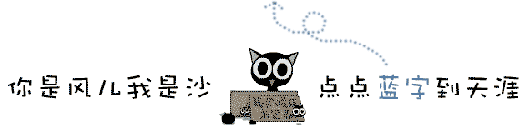
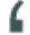
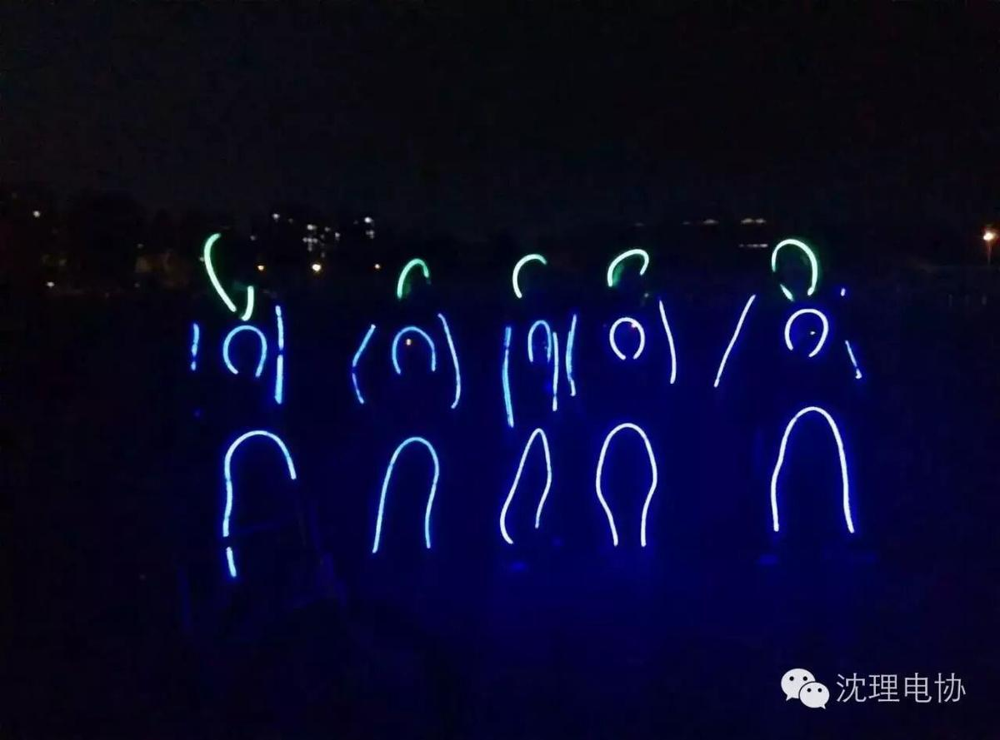
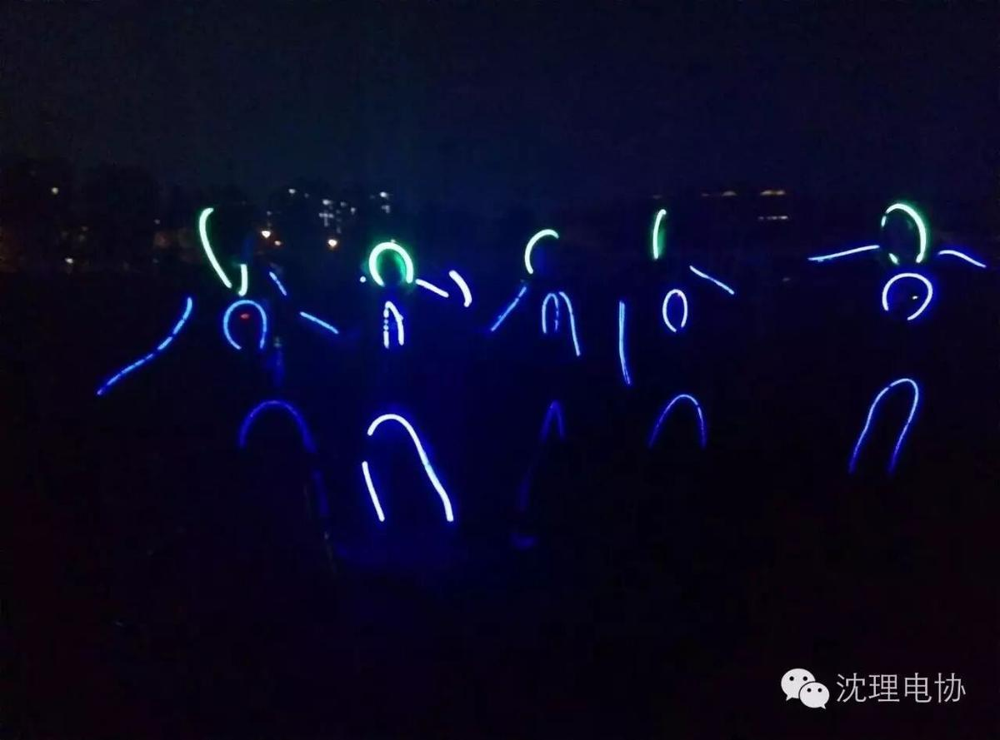
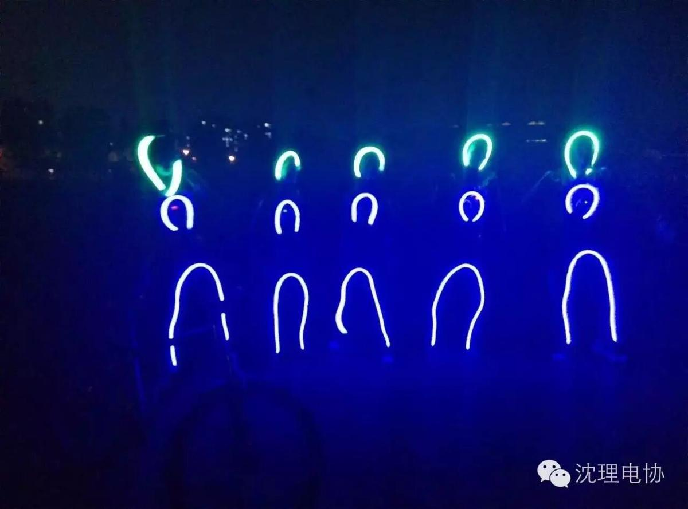
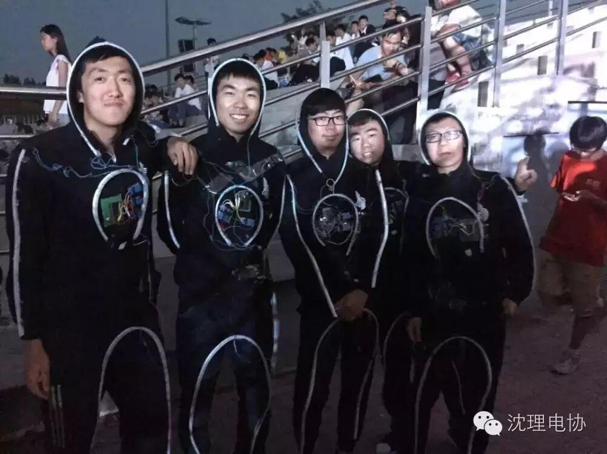
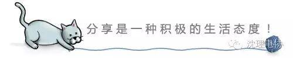

使用小程序


”魅力社团，青春同行“由共青团沈阳理工大学委员会主办，有校学生联合会承办的第十一届社团文化节闭幕式上，电协以技术与舞蹈相结合的荧光舞，给现场观众带来了一场视觉上的盛宴。让大家再次感受到了电协力量。让我们再来回顾一下当时壮观，酷炫的场面吧！


是不是很激动呢，当然还有这个！ 
看过这么酷炫的舞蹈是不是想看看他们的真实面目呢，他们为了此次表演付出了巨大努力，排练，准备。最终这么酷炫效果都是他们用汗水换来的！

没有看够怎么办？？
不用急，近期我们将会推送精彩视频，小伙伴们记得关注微信动态哦！

信息部/张凤乔